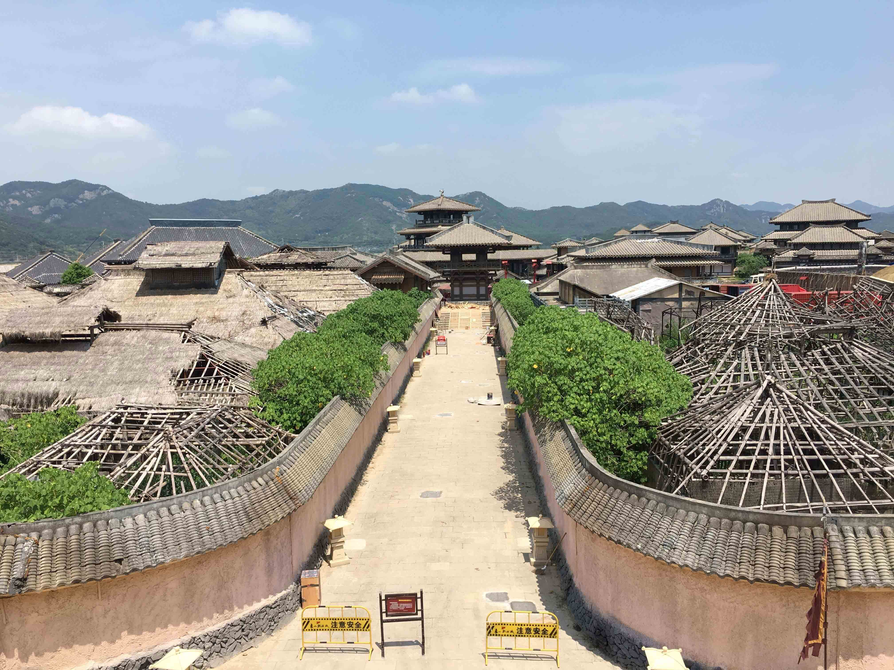

第二天一大早，就启程赶往象山影视城。象山影视城算是象山的招牌，来象山肯定是要来影视城看看玩玩，这边拍摄过很多的电影电视剧，我也是想来看看这些影视剧的取景场景。
导航看着石浦古镇到影视城距离不远，但是打车过去，发现路真的好曲折，弯弯绕绕的，滴滴花了80多块钱。150元的门票其实也算贵的，推荐大家如果要去玩，可以在美团上预订一下130块的门票， 不过需要提前两个小时，适合计划好时间去玩的小伙伴
象山影视城有4块区域，襄阳城、春秋战国城、民国城、仙侠城。
仙侠城建筑不是很多，基本都是室外场景。
我电视剧挺少看，据说三生三世90%都在这里取景，我倒没什么感触。
后面的几个区域，建筑就要多得很，走完仙侠城，我们到了襄阳城，也就是以前的神雕侠侣城。在这边就会有一种眼熟的感觉，街道，场景感觉似乎都在影视剧里看到过。
这个地方我印象特别深刻，《琅琊榜》里靖王府的练武场，就是在这里，电视剧里看着很大，但是实际上其实特别小。
这边有个剧组在拍戏，叫非常四侠，主演我一个都没听过。只是感觉这些群演不容易，这么热的天气，穿着古装的长袖，长裤，靴子，不得热炸。
春秋战国城就更加眼熟了，皇宫，甬道，都是影视剧里特别常见的场景，不知道为什么，别的地方游客特别多，但是春秋战国城里面游客就非常的稀少。
最后是民国城，大太阳走了半天，我们已经很累了，就走完一圈看了看。
离开影视城，因为不好打车，我们就坐公交去了丹城客运中心，坐上大巴回宁波了。
PS:并不轻松但是还算愉快的两天象山之旅结束了。见识了上菜极慢，服务态度差劲的海鲜酒家，各种加价的滴滴司机，各种不知道是不是在坑我们的店家。以后玩的时候，应该不会再考虑来了。